DURANGO
Durango, oficialmente Estado Libre y Soberano de Durango, es uno de los treinta y un estados que, junto con la Ciudad de México, conforman México. Su capital y ciudad más poblada es Victoria de Durango. Está dividido en treinta y nueve municipios.
Está ubicado en la región noroeste del país, limitando al norte con Chihuahua, al noreste con Coahuila, al sureste con Zacatecas, al sur con Nayarit y al oeste con Sinaloa. Con 123 364 km² es el cuarto estado más extenso —por detrás de Chihuahua, Sonora y Coahuila—, con 1 832 650 habitantes en 2020, el octavo menos poblado —por delante de Zacatecas, Aguascalientes, Tlaxcala, Nayarit, Campeche, Baja California Sur y Colima, el menos poblado— y con 14,85 hab/km², el segundo menos densamente poblado, por delante de Baja California Sur. Fue fundado el 8 de julio de 1563.
Su capital es la ciudad homónima: Durango, aunque su nombre oficial es Victoria de Durango en honor al primer presidente de México, Guadalupe Victoria, quien fue originario de este estado.
TOPONIMIA
El nombre del estado proviene de su capital homónima, la cual fue nombrada como Durango, que significa en euskera “Vega rodeada de agua y montañas”, por Francisco de Ibarra, conquistador español procedente de la población de Éibar, cercana a la villa de Durango, en la provincia vasca de Vizcaya, en España.
Gutiérrez Tibón, estudioso de este y otros temas, considera la posibilidad de que el significado sea “vega entre alturas” o “vega extensa”; o sea, tierra plana y fértil limitada por elevaciones, o muy grande. Durango puede traducirse también como “helechal”, “lugar de helechos”, según aparece en el libro Etimología de Apellidos Vascos, de Isaac López Mendizábal. Finalmente, otra versión que aparece en la Enciclopedia de México dice que Durango quiere decir “más allá del agua”.
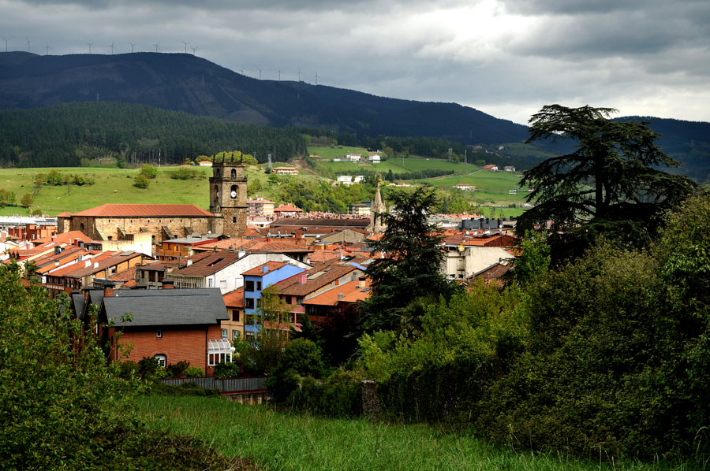
ESCUDO
El escudo está blasonado así:
El escudo de armas posee uno de los siguientes elementos: un árbol de roble de color café, y con un follaje abundante en un vivo color verde; dos lobos, en fondo azul; dos ramas de palma color verde a manera de guirnalda en ambos lados del escudo, las que van enlazadas por sus tallos con un moño de color rojo en la parte inferior. Todo esto enmarcado en un armazón color café bronce; en la parte superior del escudo aparece la corona real de color amarillo oro con piedras azules en sus arcos verticales y piedras en formas de rombo en su base, estas se encuentran incrustadas y alternan en rojo y azul, al interior de la corona se encuentra un forro rojo vivo; finalmente en la parte alta de la corona se remata con una esfera que representa el globo terráqueo rematado por una cruz latina.
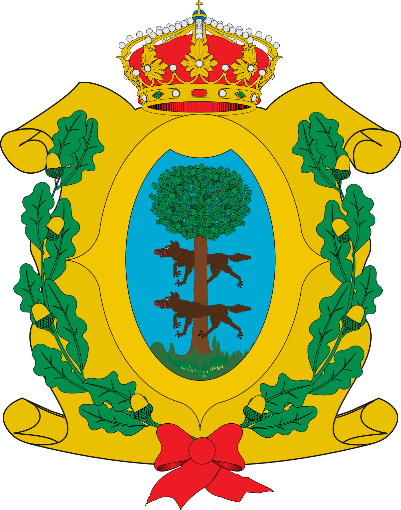
HISTORIA
La exploración española comenzó en 1531 con la expedición de Nuño Beltrán de Guzmán. En las siguientes décadas, especialmente bajo el mando de Francisco de Ibarra, se fundaron asentamientos más adentro del territorio y aún más al norte de la ciudad de Zacatecas, cuando fueron descubiertos yacimientos de plata. Ibarra nombró esa nueva área como Nueva Vizcaya en recuerdo de la Provincia de Vizcaya que se ubica en el noreste de España. La Nueva Vizcaya incluyó a los actuales estados mexicanos de Chihuahua y Durango, así como ciertas áreas del oriente de Sonora y Sinaloa, y los actuales municipios de Coahuila: Torreón, Viesca, San Pedro, Francisco Madero, Matamoros, Parras, General Cepeda, Arteaga, Ramos Arizpe y Saltillo, en una franja de unos 200 km de Oeste a Este, partiendo del actual límite estatal entre Coahuila con Zacatecas y Durango, y hacia el Norte de dichos municipios. La región cayó bajo la jurisdicción judicial de la Real Audiencia de Guadalajara, así como su administración. En 1552 el capitán Ginés Vázquez de Mercado descubrió uno de los yacimientos de hierro más ricos del mundo. Además de este descubrimiento, la región también era famosa por las riquezas de sus minas. Muestra de esto, son las minas que le pertenecían al Conde del Valle de Súchil. En las siguientes décadas los franciscanos, seguidos de los jesuitas, comenzaron la evangelización de Nueva Vizcaya, asentando los cimientos de una gran diócesis. Las poblaciones Nombre de Dios, Peñol (Peñón Blanco), San Juan Bautista del Río, Analco, Indé, Topia, La Sauceda, Cuencamé y Mezquital surgieron del trabajo evangelizador de la orden franciscana. Mapimi, Santiago Papasquiaro, Tepehuanes, Guanacevi, Santa María del Oro, Tamazula, Cerro Gordo (Villa Ocampo), San Juan de Bocas (Villa Hidalgo) y otros dos núcleos que eran originalmente franciscanos, La Sauceda y Cuencame, fueron fundados por religiosos de la Sociedad de Jesús tras invitación del gobernador Rodrigo del Río de Lossa.
Como parte de las Reformas borbónicas, en 1777 las provincias del norte del Virreinato fueron organizadas en la Comandancia General de las Provincias Internas, la cual fue una entidad autónoma del Virreinato en cuestiones militares y administrativas, pero apoyada financieramente por el mismo.
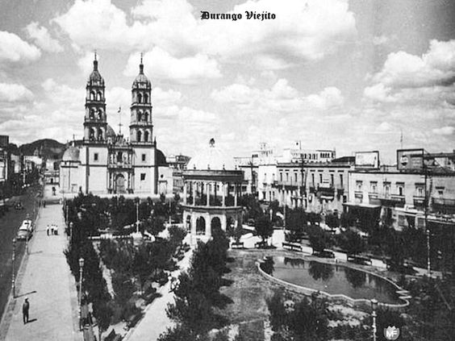
GEOGRAFÍA
Con 123,451.2 km2 Durango representa aproximadamente el 6.3% de todo el territorio de México. Es el cuarto estado más grande y se ubica en el extremo noroeste de la Mesa del Centro, donde se encuentra con la Sierra Madre Occidental—los picos más altos del estado. El estado tiene una elevación promedio de 1,775 metros sobre el nivel del mar, con una elevación promedio de 1,750 m en la región de los Valles y 2,450 m en la región de la Sierra. La ciudad de Durango se encuentra en las estribaciones de la Sierra Madre Occidental, con una elevación de 1.857 m.
Durango no tiene salida al mar, limita con Chihuahua, Coahuila, Zacatecas, Nayarit y Sinaloa. Está dividido en 39 municipios, según la Constitución de México de 1917, y desde entonces se han realizado varias divisiones adicionales.
CLIMA
En la mayor parte del estado el clima es frío y muy seco (con lluvias fuertes durante todo el año: de 200 a de los valles al Bolsón). En lo alto de la sierra el clima es mucho más helado con lluvias en todo el año, e invierno con heladas y nevadas (debido a las bajas temperaturas y los vientos húmedos procedentes del Pacífico). Precipitación media y una temperatura promedio de 16°C.
La zona central y sierra del estado incluyendo la capital cuentan con un clima frío la mayor parte del año, aunque en el sonido popular se menciona que esta zona cuenta con el clima correcto en la estación correcta, es decir, en primavera se registran temperaturas de hasta 35º, en verano lluvias intensas y en invierno esta zona es una de las más frías del país. Vale la pena mencionar que en el estado se encuentra la zona más fría de México; que es una zona del municipio de Guanaceví enclavada en la sierra Madre Occidental que registra las temperaturas más bajas del país al igual que la comunidad de Santa Bárbara, esta última en el municipio de Durango; con temperaturas mínimas que oscilan en los -20 °C y la comunidad La Rosilla con temperaturas mínimas récord que oscilan en los -26°C.
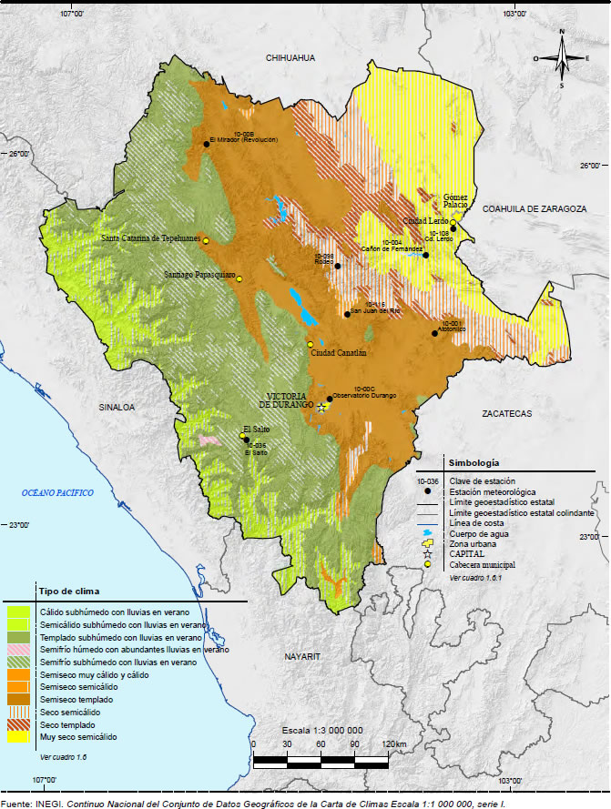
FLORA Y FAUNA
Durango se ha distinguido por su fauna en los últimos años ya que se han reencontrado animales declarados extintos como el oso negro mexicano y se han documentado alrededor de 30 individuos de oso gris (grizzly). El lobo mexicano casi desapareció en el estado de Durango durante el siglo XX, grupos de protección a la fauna local lograron reproducir y reintroducir al lobo mexicano a su hábitat natural en acuerdos con los rancheros y autoridades del estado. El puma, o león de montaña parece frecuentar las sierras de pino-encino duranguenses. En altos bosques de la Sierra Madre Occidental se encuentra una especie rara de ábeto, llamado abies duranguenses, crece en los municipios colindantes con Sinaloa y Chihuahua. Este estado es famoso por su abundante población de alacranes.
ALACRÁN
Scorpiones es un orden de artrópodos arácnidos depredadores conocidos comúnmente como escorpiones o alacranes. Se caracterizan por contar con un par de pinzas de agarre y una cola estrecha y segmentada, a menudo formando una reconocible curva hacia delante sobre la espalda y siempre rematada con un aguijón. La historia evolutiva de los escorpiones se remonta a hace unos cuatrocientos treinta y cinco millones de años, durante el Silúrico. Viven sobre todo en los desiertos, pero se han adaptado a una amplia gama de condiciones ambientales y se encuentran en todos los continentes, excepto en la Antártida. Se han descrito más de dos mil quinientas especies, divididas en veintidós familias existentes. Su taxonomía se encuentra en proceso de revisión para tener en cuenta los estudios genómicos del siglo XXI.
Se alimentan principalmente de insectos y otros invertebrados, aunque algunas especies consumen vertebrados. Utilizan sus pinzas para sujetar y matar a sus presas. Pueden utilizar su aguijón venenoso tanto para matar a su presa como para defenderse. A su vez los escorpiones son presa de otros animales de mayor tamaño. Durante el cortejo, el escorpión macho y la hembra se sujetan mutuamente con las pinzas y se mueven en una «danza» en la que el macho trata de dirigir a la hembra hacia su cápsula de esperma. La mayoría de las especies de este orden son vivíparas y la hembra cuida de las crías mientras sus exoesqueletos se endurecen, transportándolas sobre su espalda; su exoesqueleto contiene sustancias químicas fluorescentes y brilla bajo la luz ultravioleta.
La gran mayoría de las especies de escorpiones no suponen una amenaza grave para el ser humano y los adultos sanos no suelen necesitar tratamiento médico después de sufrir su picadura. Solo unas veinticinco especies cuentan con un veneno capaz de matar a un ser humano, pero en algunas partes del mundo donde hay especies muy venenosas se producen regularmente centenares de muertes de personas, sobre todo en zonas con dificultades de acceso a los tratamientos médicos. Los escorpiones están presentes en el arte, el folclore, la mitología y las marcas comerciales.
Escorpio es el nombre de una constelación y también el de un signo del Zodiaco; un mito clásico relata cómo el gran escorpión y su enemigo, Orión, se convirtieron en constelaciones en lados opuestos del cielo.
OSO GRIS
El oso grizzly u oso gris (Ursus arctos horribilis) es una de las subespecies del oso pardo (Ursus arctos) más grandes del planeta, que suele vivir en las tierras altas del territorio norteamericano. Es un animal solitario, excepto durante la temporada del desove del salmón, cuando se junta un enorme número de osos en arroyos y zonas costeras para alimentarse.
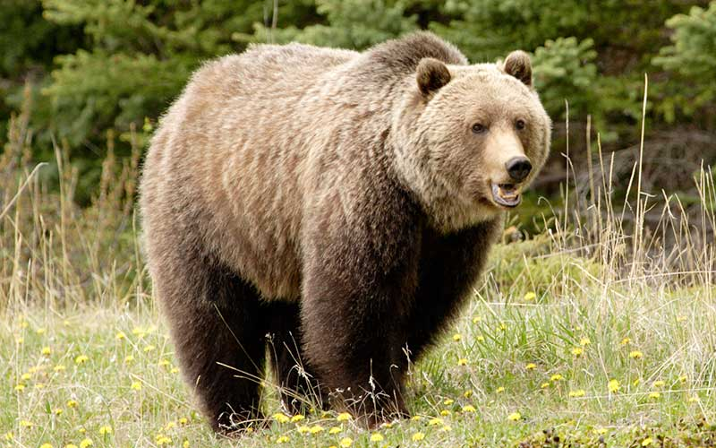
VENADO COLA BLANCA
El venado cola blanca, capasurí, ciervo cola blanca, ciervo de Virginia, venado de Virginia o venado gris (Odocoileus virginianus) es una especie de mamífero artiodáctilo de la familia de los cérvidos. Vive en diferentes ecosistemas de América, desde los canadienses, en la región subártica, pasando por los bosques secos de las laderas montañosas de México, las selvas húmedas tropicales de América Central y del Sur, hasta los bosques secos ecuatoriales del norte del Perú y otras áreas boscosas sudamericanas. Se alimenta de arbustos y hierbas. Es muy perseguido por los cazadores en toda su área de distribución, pero no se considera en riesgo. En algunas regiones sus poblaciones han aumentado debido a la escasez de depredadores. El 28 de junio de 1993 el Congreso Nacional de la República de Honduras instituyó al venado de cola blanca como símbolo nacional de la fauna de este país. Así mismo, Odocoileus virginianus fue declarado símbolo patrio de la República de Costa Rica el 2 de mayo de 1995.
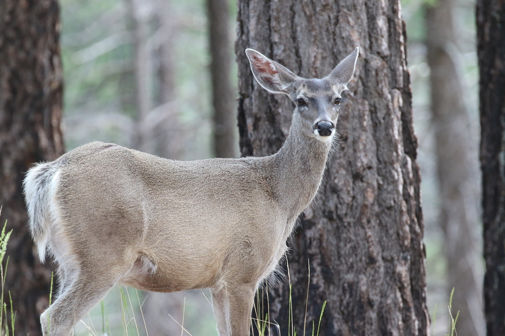
SERPIENTE DE CASCABEL
Las serpientes de cascabel (Crotalus) son un género de la subfamilia de las víboras de foseta dentro de la familia de los vipéridos. Son serpientes venenosas y endémicas del continente americano, desde el sureste de Canadá al norte de Argentina. Todas las especies menos una, C. catalinensis, son fácilmente reconocibles por el característico sonido de su cascabel el cual se encuentra en la punta de la cola. Existe otro género, Sistrurus, con especies más pequeñas, que también tienen un cascabel, pero no tan desarrollado. Se han reconocido 29 especies de serpientes de cascabel.
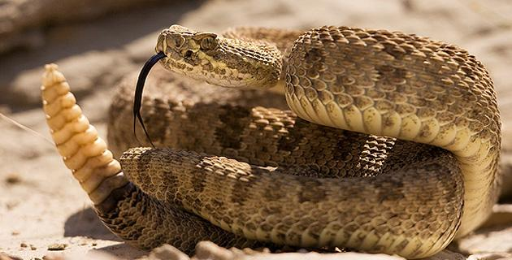
LINCE ROJO
El lince rojo (Lynx rufus) es una especie de mamífero carnívoro de la familia Felidae, una de las dos especies de linces que habitan en América del Norte. Permanece en parte de su rango original, pero las poblaciones son vulnerables a la extinción local ("extirpación") por los coyotes y los animales domésticos.
Aunque los linces rojos han sido cazados extensivamente por los humanos, tanto por deporte como por la piel, su población ha demostrado ser resistente, si bien declina en algunas áreas.
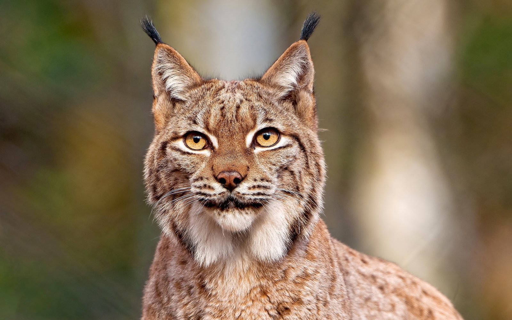
SOTOL
Dasylirion wheeleri, es una especie de planta fanerógama de la familia Asparagaceae, anteriormente de las ruscáceas. Es nativa de las zonas áridas del norte de México, en Chihuahua y Sonora y en el suroeste de Estados Unidos, en el desierto de Sonora en Arizona, y también en Nuevo México y Texas.
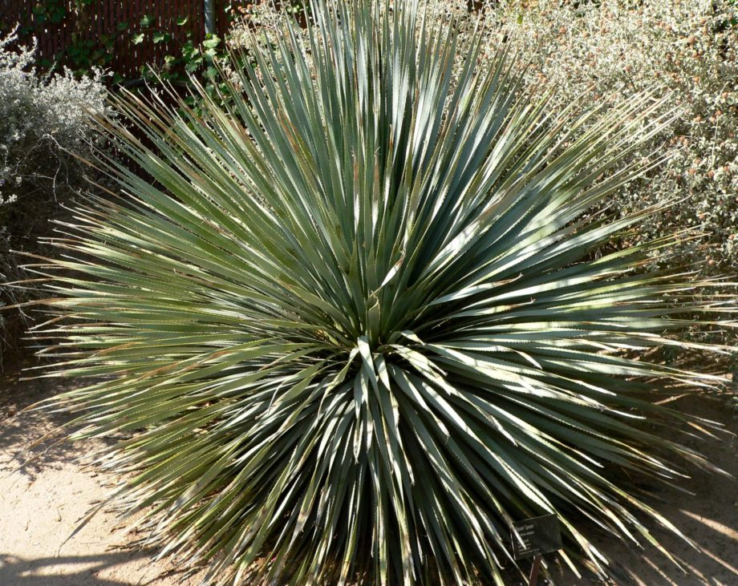
POLÍTICA
La Constitución Política de los Estados Unidos Mexicanos establece en su artículo 115: «Los estados adoptarán, para su régimen interior, la forma de gobierno republicano, representativo, democrático, laico y popular, teniendo como base de su división territorial y de su organización política y administrativa, el municipio libre» y en su artículo 116: «El poder público de los estados se dividirá, para su ejercicio, en Ejecutivo, Legislativo y Judicial, y no podrán reunirse dos o más de estos poderes en una sola persona o corporación, ni depositarse el legislativo en un solo individuo». La ciudad de Victoria de Durango es capital de Durango y sede de los poderes ejecutivo, legislativo y judicial.
ÓRGANOS CONSTITUCIONALES AUTÓNOMOS
Los órganos constitucionales autónomos son ajenos a los tres poderes del Estado, no forman parte de ninguno de ellos y el nombramiento de sus miembros nace directamente de la constitución (de ahí su nombre) a través de mecanismos; «tendrán personalidad jurídica y patrimonio propios, gozarán de autonomía técnica, operativa, presupuestaria y de gestión en el ejercicio de sus atribuciones». Todos sus integrantes son nombrados por el Congreso de Durango para periodos que no pueden ser reelectos. Entre sus facultades y obligaciones se encuentran: iniciar propuesta de ley en materia de sus competencias, proponer el proyecto de su presupuesto anualmente, sujetarse al régimen de fiscalización estatal y enviar al Congreso un informe anual de sus labores.29
La lista es la siguiente:
Comisión Estatal de Derechos Humanos. Su labor es recibir quejas de actos que vulneren los derechos humanos por parte de los funcionarios del gobierno estatal o municipales, por excepción del Poder Judicial del Estado.
Instituto Duranguense de Acceso a la Información Pública y de Protección de Datos Personales. Su labor es garantizar el acceso a la información y la protección de los datos personales en poder de los sujetos obligados.
Instituto Electoral y de Participación Ciudadana del Estado de Durango. Es uno de los treinta y dos órganos públicos locales electorales (OPLE) del país, y es encargado de la celebración de elecciones en Durango: gobernador, diputados locales y ayuntamientos, así como cualquier otro proceso electoral.
Instituto de Evaluación de Políticas Públicas. Es la encargada de calificar el desempeño de las políticas públicas y de generar información para orientar las decisiones de los tres poderes.
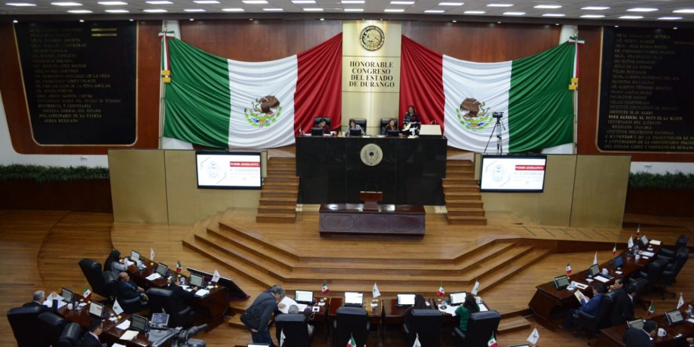
TURISMO
Durango se ha convertido en uno de los estados turísticos más importantes por sus paisajes y lugares turísticos para visitar es un lugar perfecto para disfrutar de alguna aventura, para personas que gustan de emociones fuertes, cuenta con cañones quebradas ríos y presas, cuenta con una gran diversidad geográfica para practicar varios deportes extremos como kayak, bicicleta de montaña, rapel, escalada libre y más, ya que Durango cuenta con imponentes quebradas, arroyos secos como el Puente de Ojuela ubicado en Mapimi, cascadas de hasta 80 metros de altura como lo es el Salto del Agua Llovida, lagos de más de 800 metros de diámetro como el de Puentecillas, paisajes como Mexiquillo y su gran desierto donde se encuentra la famosa zona del Silencio, conocida por sus propiedades magnéticas similares al Triángulo de las Bermudas, así como la fauna y flora únicas de esa región.
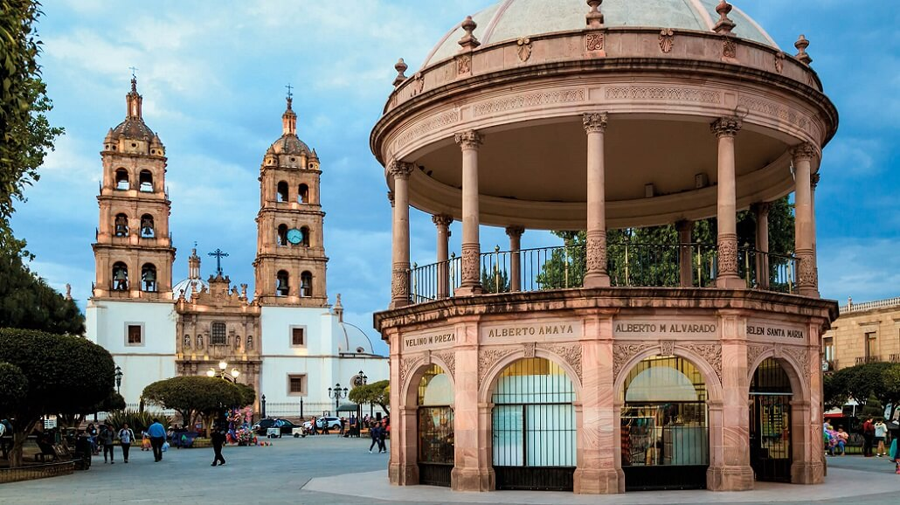
DEMOGRAFÍA
El estado de Durango cuenta con tan solo un millón ochocientos treinta y dos mil seiscientos cincuenta habitantes (1,832,650 según el Censo de Población y Vivienda 2020, INEGI), esta cantidad de población en el estado representa el 1.5 por ciento de la población nacional que es de 126 millones 014 mil 024 habitantes, ocupando así, la posición 25 de entre las 32 entidades federales. A pesar de la baja densidad demográfica que presenta, 14.85 habitantes/km², el 66.82% de la población se concentra en solo 3 de los 39 municipios duranguenses, Durango, Gómez Palacio y Lerdo. El resto, vive en localidades dispersas y pequeñas, ya que existen 6 258 comunidades en total en el estado. Según datos del año 2015, el 2% de la población mayor de 5 años en estado hablaba alguna lengua indígena. De estos, el 80% pertenecientes a la etnia tepehuana, cultura oriunda del territorio durangueño. Otros grupos indígenas más pequeños son los huicholes y los mexicaneros (cuyo origen se desconoce y su lenguaje es el náhuatl). El 67% de la población vive en zonas urbanas, por debajo del 76% de la media nacional. Los problemas que la migración rural a zonas urbanas ocasiona es uno de los temas más importantes para el gobierno de Durango, debido al crecimiento de la demanda de servicios públicos, entre otros.
POBLACIÓN
Según los datos que arrojó la encuesta realizada por el Instituto Nacional de Estadística y Geografía 2020, el estado de Durango cuenta con un total de 1,832,650 habitantes. De dicha cantidad, 890,149 son hombres y 942,501 son mujeres. La tasa de crecimiento para la entidad durante el período 2015-2020 fue del 4.43% su población absoluta es de 1,832,650 y su población relativa es de 14,85 personas cada km.
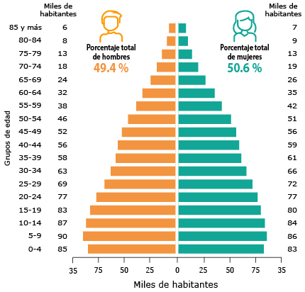
GRUPOS ÉTNICOS
De los 65 grupos étnicos que hay en México, en el actual territorio duranguense conviven 5 etnias: Tepehuanes, mexicaneros o náhuatl, huicholes, coras y tarahumaras o rarámuris. Los menonitas son otro importante grupo étnico alóctono que reside en el estado desde casi un siglo de haber llegado a México.
Actualmente, la población indígena en el Estado de Durango es de aproximadamente 29 mil personas, cuyo grupo mayoritario es el tepehuano, seguido en una proporción inferior al 10 por ciento respecto a su número, por los huicholes, los coras, los mexicaneros náhuatl y los tarahumaras. La atención educativa a la población indígena se ha concentrado en la Región Sur del Estado, mediante un servicio educativo regular, con enfoque intercultural bilingüe, en 186 localidades y cientos de microlocalidades con servicios alternativos. En 345 escuelas, 612 maestros atienden a 11,025 alumnos en servicios regulares. El 7.0 por ciento de los alumnos indígenas cursan la educación inicial, el 8.0 la preescolar, el 64.4 la primaria, el 16.5 la secundaria, principalmente en la modalidad de telesecundaria, el 4.0 la media superior y menos del uno por ciento la educación superior; sin embargo, todavía existen más de 1,642 niños y jóvenes indígenas, de 5 a 14 años de edad, que no asisten a la escuela. (Secretaría de Educación, 2007).
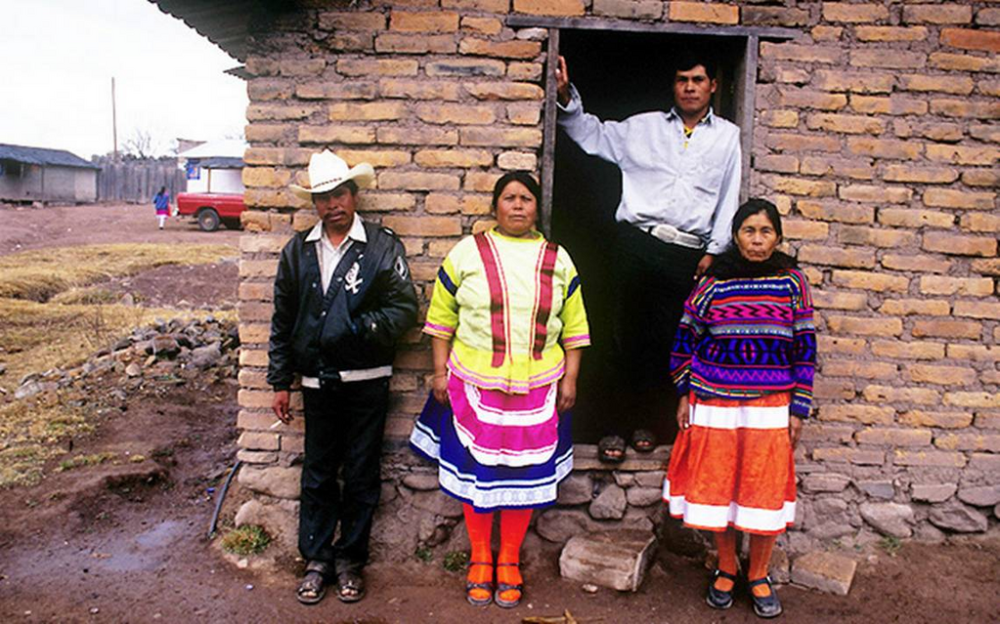
CULTURA
Durango es cuna de diversos músicos destacados como Antonio Alvarado, Joaquín Amparán, Melquiades Campos, Pedro Michaca y Silvestre Revueltas del cual lleva el nombre en el mes de octubre en el Festival Cultural Revueltas como homenaje a la gran familia de artistas Revueltas, el cual se realiza desde 1998.
Uno de los espectáculos más apreciados por los habitantes de Durango es "Kicham", presentado por la Compañía Korían y dirigido por la profesora Elia María Morelos Favela, que integra a más de 100 actores en escena y presenta su temporada de estreno cada año en el mes de junio, siempre con temas diferentes, pero todos sobre cultura durangueña.
GASTRONOMÍA
Algunos platillos típicamente durangueños son el caldillo, el asado de bodas, los chicharrones de vieja (carnitas de chivo), las enchiladas de cacahuate y de leche, el pipián rojo (chile, semillas de calabaza y maíz), la barbacoa de olla, los frijoles blancos (patoles) guisados con chorizo y tornachiles, las panochas –tortillas de harina– de sal y de dulce, las gorditas de nata, las gorditas de maíz rellenas de guisados, los tamales de chile colorado y de dulce, los atoles, el champurrado, las torrejas con miel de maguey, el camote y la calabaza en miel de piloncillo, las palanquetas de nuez, las empanadas de chilacayote, el pan de pulque, las semitas de anís, los rollos de camote, el camote con coco, las gorditas de cuajada (frutas de horno), los buñuelos, el arroz con leche, el rollo de dátil y nuez, los tacos de alacrán (platillo de reciente creación) y como bebida espirituosa el mezcal. Como puede verse, no falta nada para deleitar el paladar de los visitantes.
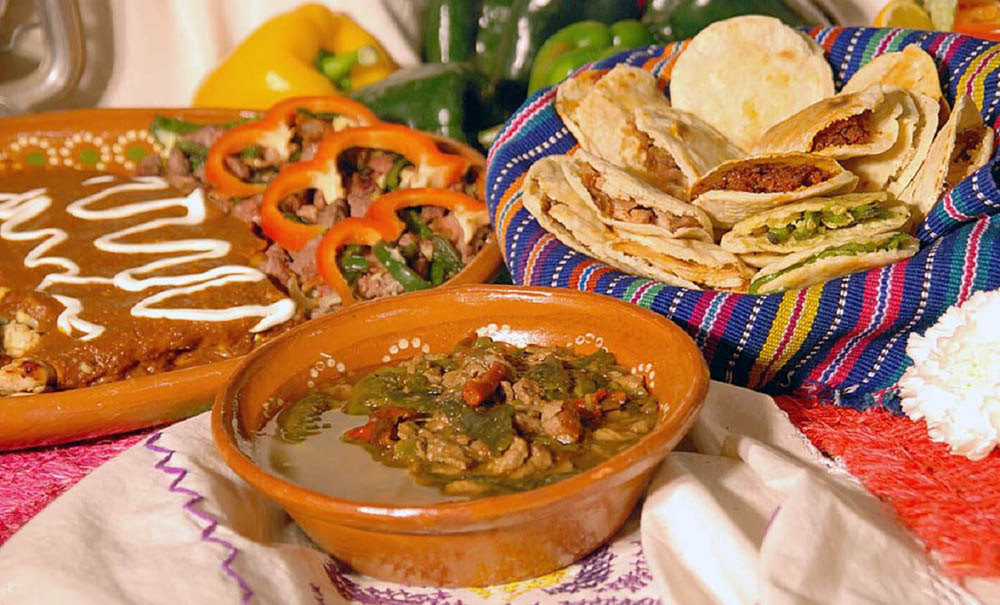
ARTESANÍAS
Los artesanos de Durango han logrado expresar sus tradiciones y costumbres, así como la concepción de la belleza y la relación con la naturaleza a través de sus creaciones. En sus trabajos se pueden ver tanto el carácter mestizo, como la herencia prehispánica.
A lo largo del estado se pueden encontrar artesanías elaboradas con piel, creando: bolsas, carteras, cinturones, cigarreras, maletas, botas y sillas de montar.
Los huicholes del área realizan sombreros, bolsas y morrales, además de pulseras, adornos de chaquira y algunos trabajos en madera y arcilla.
Los tepehuanes elaboran arcos, flechas, sombreros, fajas, frazadas de lana y canastas tejidas.
Los tarahumaras realizan cerámica de barro, arcos y flechas con punta de piedra, flautas y tambores.
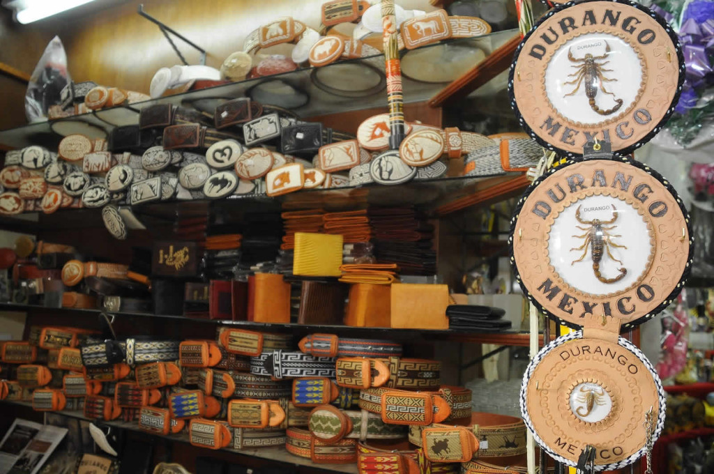
GOBERNADOR
José Rosas Aispuro Torres (Tamazula de Victoria, Durango; 19 de octubre de 1961) es un abogado y político mexicano, miembro del Partido Acción Nacional. Es el gobernador de Durango desde el 15 de septiembre de 2016.
BIOGRAFÍA
Es licenciado en Derecho, tiene maestría y doctorado en la misma especialidad, ha sido presidente municipal (2001 a 2004) de Durango, diputado local por el VI distrito en el Estado de Durango siendo presidente de la gran comisión, ha sido en dos ocasiones diputado federal: en la LVI Legislatura de 1994 a 1997 en representación del III Distrito Electoral Federal de Durango y la LX Legislatura de 2006 a 2009 por Representación proporcional y Presidente del Comité Estatal del PRI en Durango, instituto político del cual renunciara a finales de 2009.
Compitió en las elecciones para gobernador del estado en el 2010 como candidato ciudadano abanderado de la Coalición Durango nos une Integrada por (PAN, PRD, Convergencia y PT) contra Jorge Herrera Caldera (PRI), elección en la que perdió con muy poca diferencia ante el candidato contrincante.
En 2012 el PAN, lo lanzó como candidato a Senador, mismo cargo que ganó y llevó desde el 1 de septiembre de ese mismo año hasta 2016. Lo sucedió en el puesto el lic. Héctor David Flores Ávalos. El 1 de febrero de 2016 los partidos políticos PAN, el PRD, el PT y Convergencia le propusieron ser su candidato a la gubernatura, lo cual fue aceptado por él y oficialmente presentando como candidato de la alianza el mismo día. y desde entonces perfilar a Aispuro como virtual gobernador de Durango.
El día 5 de junio de 2016 el Instituto Estatal de Participación Ciudadana de Durango dio a conocer a través del Programa de Resultados Preliminares Electorales una ventaja irreversible de José Aispuro sobre Esteban Villegas candidato del Partido Revolucionario Institucional, convirtiéndose en el primer gobernante de oposición en la entidad dando un vuelco histórico a la forma en que se habían presentado los resultados electorales en los últimos 80 años.
El 15 de septiembre del año 2016 toma posesión del cargo como primer Gobernador del Estado de Durango emanado de una fuerza política diferente al PRI.